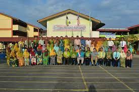

SMK REDANG PANJANG
|
After that, I continued my studies at Sekolah Model Khas Redang Panjang, Ijok from form 1 to form 5. This school is called ‘Model Khas’ is because this school
mixes primary and high school students in one school. It's very interesting. The school also provides dormitory facilities to make it easier for students to go to school.
|
 |